A Glass Box dev log for the 2026 Epic AI MegaJam
One Good Take: the Director's Cut dev log
An entrant who does not write code, a crew of AI agents, and everything that ended up on the cutting room floor.
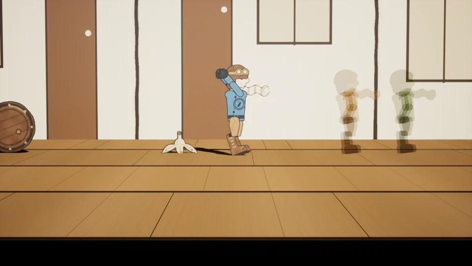
- 34slices finished
- 96commits
- 37reviewer verdicts
- 27ideas on the cutting room floor
- 82hours since the cameras rolled
One Good Take is a one-thumb editing puzzle game made in Unreal Engine 5.8 for the theme "Director's Cut".
Every line of code, every sprite and every sound in it is made by AI agents, working in small slices.
A server with no graphics card does the thinking; the entrant's laptop does the building and testing.
This page is generated from the project's own records after every finished slice. Every number on it is counted, not typed.
What was cut matters as much as what was kept, so the cutting room floor is part of the show.
The director's calls
This jam's theme is a director directing a crew. Here the director is the entrant and the crew is a set of AI agents. These are the director's decisions and playtest notes, in order, each followed by what the crew did about it.
Decision
“I still want to enter, since the work is already done and the laptop has been restarted. Make sure we stay in, and win.” (translated from Malay)
An automatic evaluator withdrew the entry at 04:37 after two gates were missed. The director overruled it seven minutes later.
What the crew did: Within the hour the crew restored the laptop tunnel, the laptop kit and the entry, recorded the decision in ADR 0018 (it supersedes the automatic withdrawal, ADR 0017), cut the scope to Mode S (ADR 0019) and went straight to the first build.
Decision
“I want to STAY IN. Withdrawal happens only on my own word.” (translated from Malay)
Standing order to the crew: no agent may withdraw the entry again.
What the crew did: Withdrawal is now the director's call only: it is written into the project rules, and no automatic reviewer may answer that question again.
Decision
“I do the submission myself (itch, YouTube, the jam form); the jam rules do not allow agents to submit.” (translated from Malay)
The director keeps the submission in human hands, as the rules require.
What the crew did: The crew prepares a submission pack with a copy-ready answer for every form field, and never logs in to itch.io, YouTube or the jam form.
Decision
“OK, AimanMalib.” (translated from Malay)
Team name chosen once the crew showed that the zip must be named TeamName_GameName; the build was re-zipped under the new name in the next slice.
What the crew did: The packaged build was zipped again as AimanMalib_OneGoodTake.zip, and every submission text uses the team name.
Decision
“What does making it public change? If it matters, why not just do it?” (translated from Malay)
The director decided the dev log should be public instead of a single itch post.
What the crew did: The dev log repository goes public with GitHub Pages once the public-text checks pass; the game repository stays private.
Decision
“What matters is winning.” (translated from Malay)
Said after the crew compared this dev log with the strongest public ones and reported that ours had no pictures and no director's voice. Pictures and these notes were added because of it.
What the crew did: This page gained pictures from the build evidence, a gameplay clip at the top and the director's notes (P24a).
Playtest note
“Honestly, I can't work out how to play this.” (translated from Malay)
The director's first minutes with the first packaged build (P13). The script-note cards said what to press but never said what the goal was. The crew treated this as the most important note of the jam and rebuilt the opening of the game around it.
What the crew did: The crew added an opening title card before scene 1 (what a take is, the goal: get Lucky to the X), made scene 1 a guided scene that takes one action at a time (ROLL and watch take 1 fail, tap TAKE 2, ROLL), and put the goal line and an X sign on the stage (P13b, ADR 0025).
Playtest note
“I can't see a 'take' button. There's ROLL, UNDO, and a button that looks like scissors.” (translated from Malay)
Second note from the same playtest. Two findings: the film strips did not read as things you can tap (the card said 'Tap a take' but nothing on screen was labelled a take), and the scissors that count the cuts left looked like a button.
What the crew did: Every film strip now has a TAKE 1 / TAKE 2 tab at its left end in the take colour (tapping it taps the take), the final strip is labelled YOUR FILM, and the scissors counter became a plain CUTS LEFT slip away from ROLL and UNDO, hidden in scenes 1 and 2 (P13b, ADR 0025).
From a black frame to a packaged build
Real captures from the build, in the order they were made. Every engine frame was rendered on the laptop and sent back to the server through the tunnel.
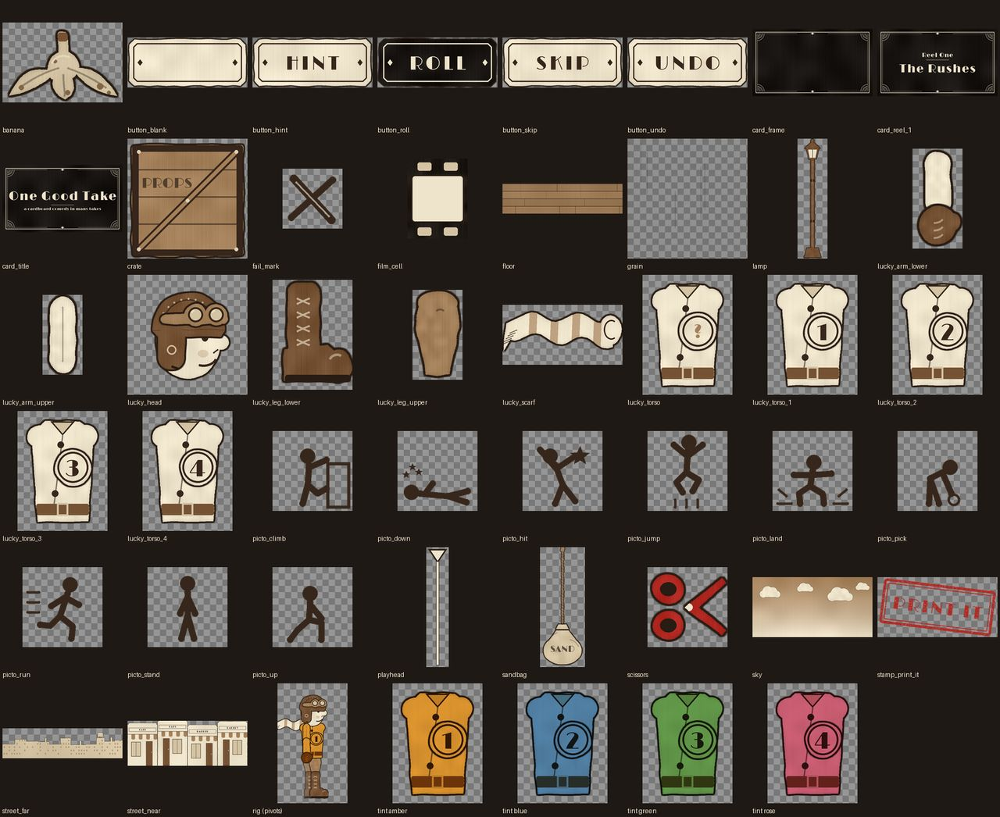
Day one, before any laptop: every prop, button and puppet part, drawn by a Python program in the repo. The first frame the laptop sent back: pure black. Build, content and tests had passed, but the stage was still empty. 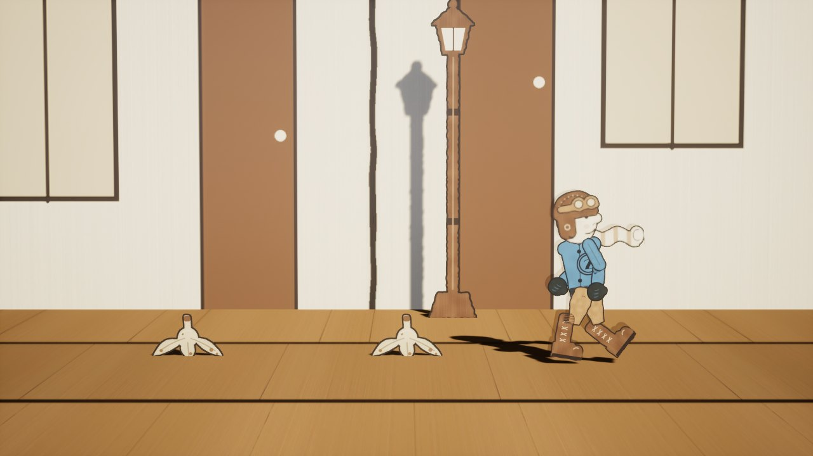
Two hours later: a cardboard stage with real shadows, and Lucky, a jointed paper puppet. 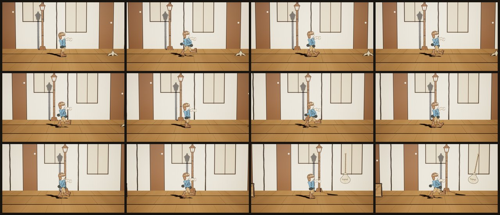
Lucky's run, twelve engine frames in a row, checked as a sheet: animated on twos, feet on the floor. 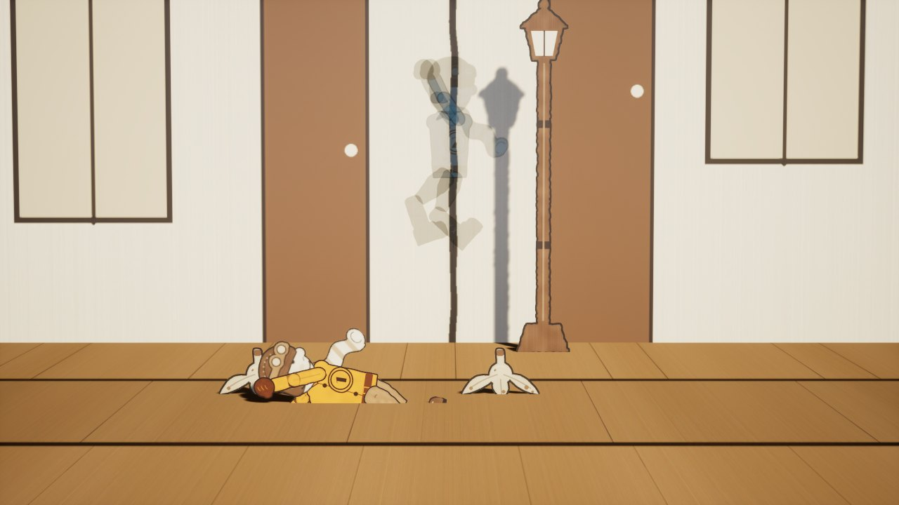
All takes play at once: the active take is solid, the others are ghosts in their take colour. A wrong cut fails like old film: the pratfall, then the frame burns through and the reel rewinds. 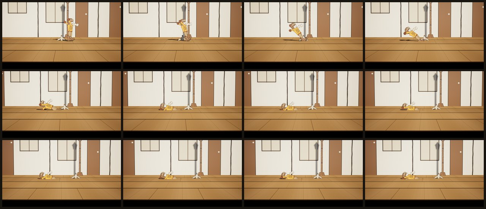
One of six pratfall sheets: the banana, frame by frame. 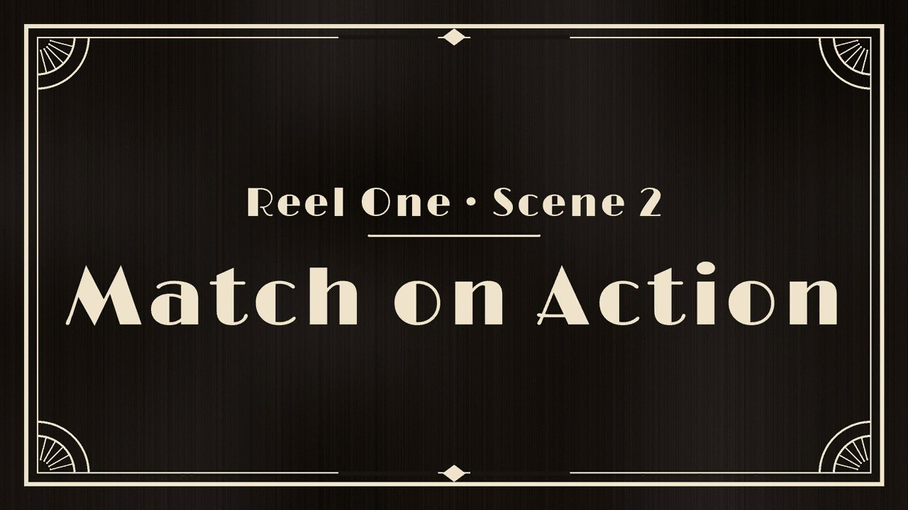
A winning cut is replayed as a silent film, with an intertitle drawn from the scene's own data. 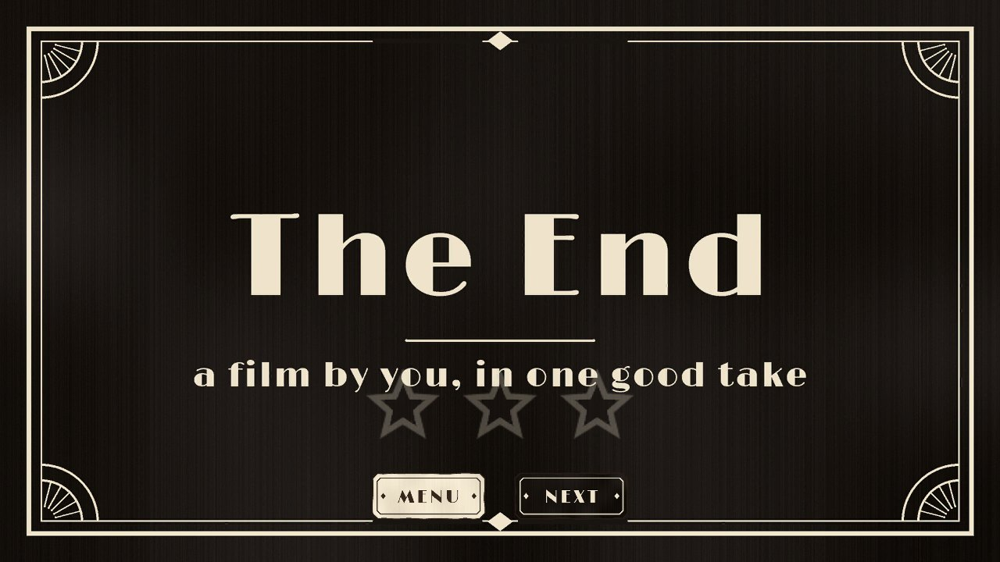
The End card, with up to three stars for using fewer cuts. 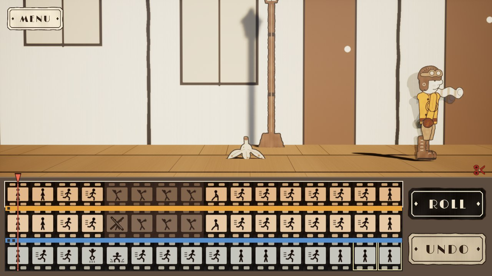
The packaged Windows build: one film strip per take under the stage, ROLL and UNDO on the right. 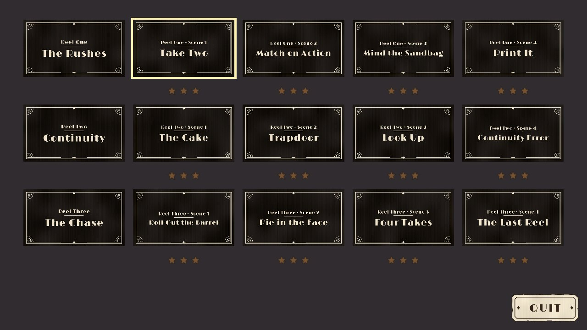
The reel menu: every scene is a title card, with the stars you earned under it. 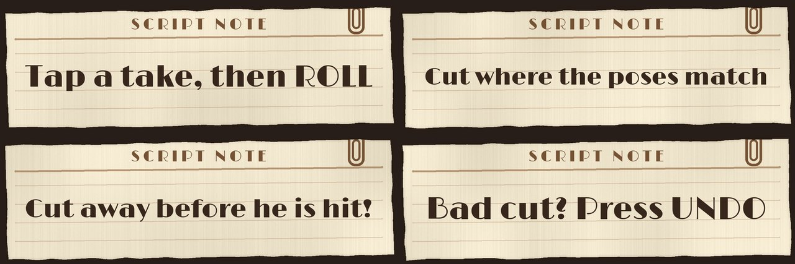
Before the first playtest: four script notes that say what to press, but never what the goal is. 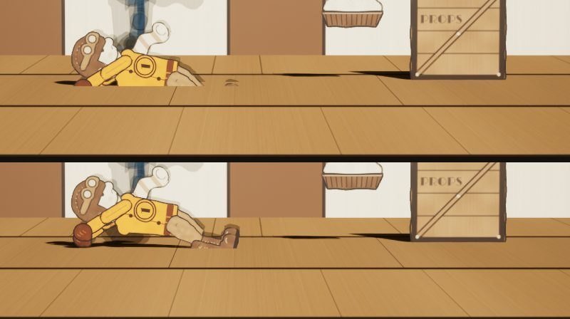
Before and after: a fallen Lucky used to sink into the floor. 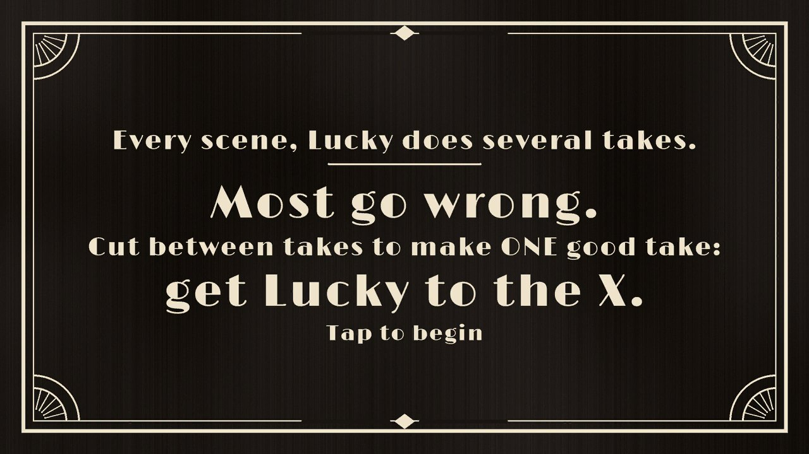
After the director's playtest: an opening card that names the goal before anything else. 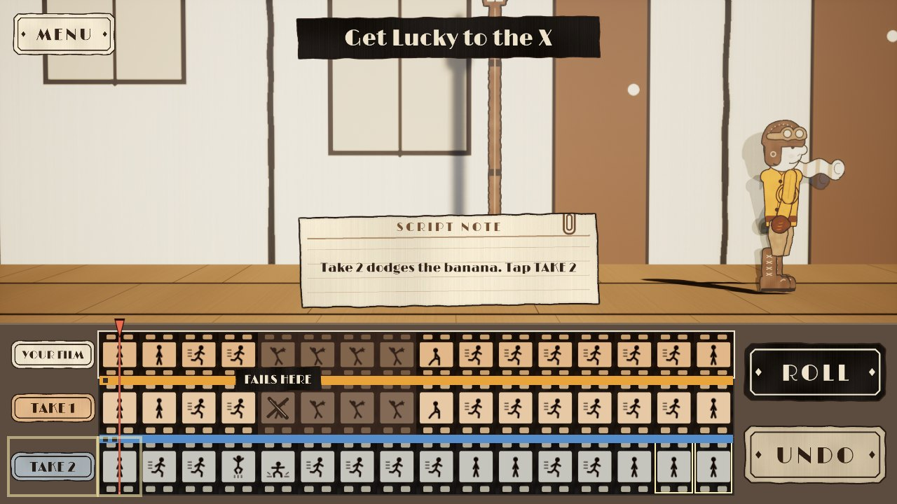
Scene 1 now guides one step at a time, with labelled Take and Your Film tabs and a "fails here" marker on the failing frame. 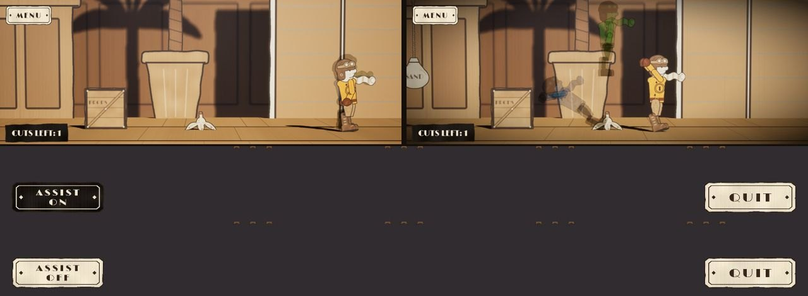
Grain, vignette and flicker over the stage, and an Assist switch in the menu that turns the continuity helper on or off.
Call sheet
| The director | the human entrant: sets the vision, plays the builds and decides what is cut. Quoted here only as written. | 8 notes so far |
|---|---|---|
| The planner | an AI agent session that turned the design brief into the slice plan this crew follows | one plan |
| The builder | a fresh AI agent session for each small slice of work | 45 sessions so far |
| The reviewer | a separate AI agent session that reads every slice and can send it back | 37 verdicts so far |
| The stunt double | automatic checks after every slice; automated play-throughs of every scene once the laptop is online | 38 check runs so far |
Before the cameras rolled
- The contest period opened at 12 Nov 2026, 05:00 UTC. The first commit of this project landed at 12 Nov 2026, 05:20 UTC.
- Made before that, and only this: the entrant's general-purpose agent runner on their server (months old, not made for this game).
- The design brief and its agent instructions, written on 11 Nov 2026 between 19:45 and 20:10 UTC, after the theme was revealed at 19:28 UTC. It holds no code, levels, art or audio.
- The entrant's own installs of Unreal Engine and their Epic and itch accounts.
- Everything else, including the laptop kit and every level, art and audio tool, was made after the start; the version history is the proof.
Dailies
The four contest days on the editing desk, one strip per role. Swipe the desk to scrub through time; tap a frame to read what happened. A red slash is a cut; the hatched end of the reel is not shot yet. The full log follows, day by day.
- Day 1
- 07:00
- 09:00
- 11:00
- 13:00
- 15:00
- 17:00
- 19:00
- 21:00
- 23:00
- 01:00
- 03:00
- Day 2
- 07:00
- 09:00
- 11:00
- 13:00
- 15:00
- 17:00
- 19:00
- 21:00
- 23:00
- 01:00
- 03:00
- Day 3
- 07:00
- 09:00
- 11:00
- 13:00
- 15:00
- 17:00
- 19:00
- 21:00
- 23:00
- 01:00
- 03:00
- Day 4
- 07:00
- 09:00
- 11:00
- 13:00
- 15:00
- 17:00
- 19:00
- 21:00
- 23:00
- 01:00
- 03:00
- 05:00
Director
Builder
Reviewer
Stunt double
- passed
- passed
- passed
- passed
- passed
- passed
- passed
- passed
- passed
- passed
- passed
- passed
- passed
- passed
- passed
- passed
- passed
- passed
- passed
- passed
- passed
- ▶
- ▶
- ▶
- ▶
- passed
- passed
- ▶
- ▶
- passed
- ▶
- ▶
- ▶
- ▶
- ▶
- ▶
- ▶
- ▶
- ▶
- ▶
- ▶
- ▶
- ▶
- ▶
- ▶
- passed
- sent back
- passed
- ▶
- ▶
- ▶
- ▶
- ▶
- ▶
- passed
- ▶
- ▶
- ▶
- ▶
- ▶
- ▶
- ▶
- ▶
- passed
- ▶
- ▶
- ▶
- ▶
- ▶
- ▶
- ▶
- ▶
- ▶
- ▶
- ▶
- ▶
- passed
- ▶
- ▶
- ▶
- ▶
- passed
- ▶
- ▶
- ▶
- ▶
- ▶
- ▶
- ▶
- ▶
- passed
- ▶
- ▶
- ▶
- ▶
- ▶
- ▶
- ▶
- passed
- ▶
- ▶
- ▶
- ▶
- ▶
- ▶
- ▶
- ▶
- ▶
- ▶
- ▶
- ▶
- ▶
- ▶
- ▶
- ▶
- ▶
- passed
- ▶
- ▶
- ▶
- ▶
- ▶
- ▶
- passed
- ▶
- ▶
- ▶
- ▶
- ▶
- passed
- passed
- ▶
- ▶
- ▶
- ▶
- ▶
- ▶
- ▶
- ▶
- ▶
- ▶
- ▶
- ▶
- ▶
- ▶
- ▶
- ▶
- ▶
- ▶
- ▶
- passed
Day 1 · Thu 12 Nov
- Cut: Web build and the UE 5.9 MegaJam Preview
- Cut: Hand-written Blueprints
- Cut: An in-game level editor
- Cut: Leaderboards
- Cut: Controller support
- Cut: Localisation
- Cut: Any logo, including the engine's
- Cut: DLSS and other vendor upscalers
- Cut: UEFN (Unreal Editor for Fortnite) track
- Cut: iOS and macOS builds
- Cut: An LLM inside the gameplay
- Cut: Any server or network code in the game
- Cut: Multiplayer
- Cut: Third-party licensed text-to-speech voices
- Cut: Fab, Megascans, Quixel assets and AI-generated 3D models
- Cut: AI-generated music
- P0 · done. Set up the repo: spec and plan installed, repo rules, first decision records, Python tool project, contest entry recorded.
- P1 · done. Write the laptop service: a closed list of endpoints behind a token, one job at a time, sync and read-only file access limited to C:\MegaJam.
- P2 · done. Open the link: a reverse SSH tunnel key that can only forward two loopback ports, and a host client that logs every call.
- P3a · done. Build the laptop kit: five double-click batch files that install, start, pause and stop the service, plus a kit generator that keeps secrets out of the repo.
- P3b · done. Write the owner's one-page setup guide and hand the kit over.
- P4 · done. Start collecting the dev log: a recorder for slices, cuts, bloopers and the director's own notes, with the first five slices and the spec's cuts filled in.
- P3c · done. Write down the pre-submission amendment: fourteen review items and the four places where the build may differ from the spec, each with its reason and a way back.
- P22a · done. Publish a first-day dev log: a generated static page built only from the project's records, exported to its own private repo after every finished slice.
- Blooper: The first solver run proved the puzzle had no puzzle: under the spec's rule, the last take of every winning film also wins on its own, so par was always 0.
- P5 · done. Write the scene model, the legal-cut rule and a breadth-first solver on the host, with one unit test per cut condition.
- P6 · done. Generate the first reel on the host: a seeded level generator, check.py for every PRD 4.5 check, and four scenes that pass it.
- P7 · done. Paint the first wave of art from code: Lucky's jointed cardboard parts, wave-one hazards and props, the studio street set, the editing-desk UI and title cards, with one open-licensed display font.
- P8 · done. Synthesize the first wave of audio from code: a honky-tonk ragtime piano at 150 BPM (one beat per game tick), win and fail stingers, scissors, projector, buzzer and scrub notes, all through an old projector speaker chain, each stem measured for loudness.
- P9 · done. Lay out the Unreal project as text only: project file, Game and Editor targets, a pure C++ copy of the cut rules, a scene loader, the ogt console commands, automation tests and the editor script that imports the generated art and audio, with the C++ rules checked against the Python solver on the host.
- The reviewer sent the slice back. The reviewer read the change, measured it, found a claim that did not hold, and sent the slice back to the builder with a note. The next attempt fixed it.
- The reviewer sent the slice back. The reviewer read the change, measured it, found a claim that did not hold, and sent the slice back to the builder with a note. The next attempt fixed it.
- P14 · done. Reels 2 and 3: eight new scenes with a continuity prop, trapdoors, falling objects, a rolling barrel and pie volleys, all passing check.py
- Cut: Night rooftop set (third backdrop)
- P15 · done. Second wave of art and audio for reels 2 and 3: hotel lobby set, new hazards and the cake prop, the script supervisor and her note cards, fail gags, two more rags, megaphone babble and the remaining effects
- P18 · done. Record the entry as open work with no patent filing, so public submission text is no longer held back by the ledger gate
- Blooper: The reviewer sent P9 back twice: the dev log listed one commit per slice when most slices had several, and the first fix only repaired P9 while claiming every slice was right.
- P22 · done. Turn the dev log into an editing desk: one film strip per role, red cut marks, all eight sections, every number from data, source downloads at export.
- The reviewer sent the slice back. The reviewer read the change, measured it, found a claim that did not hold, and sent the slice back to the builder with a note. The next attempt fixed it.
Day 2 · Fri 13 Nov
Not shot yet.
Day 3 · Sat 14 Nov
- Cut: R2 Unreal MCP visual checks (P20)
- Cut: R1 Android build (P19)
- Cut: Deleted Scenes (two bonus scenes)
- Cut: Windows look upgrade (P13a)
- Cut: End-of-game reel The Director's Cut (P17a)
- Cut: Reel 3 shrunk: target 8 scenes (reels 1 and 2); reel 3 ships only if it passes autoplay before the freeze
- Director's note: “I still want to enter, since the work is already done and the laptop has been restarted. Make sure we stay in, and win.” (translated from Malay) What changed: Within the hour the crew restored the laptop tunnel, the laptop kit and the entry, recorded the decision in ADR 0018 (it supersedes the automatic withdrawal, ADR 0017), cut the scope to Mode S (ADR 0019) and went straight to the first build.
- P26 · done. Section 7 rollback (withdrawal) after gates G0 and G1 passed without the laptop; reversed by the owner the same hour
- Blooper: An automatic flag reviewer answered the stay-or-withdraw question meant for the owner; the next session withdrew the entry, removed the tunnel line and deleted the kit. The owner reversed it six minutes later and everything was restored within the hour.
- P26r · done. Record the owner's reversal of the withdrawal: ADRs 0018 and 0019, the false cut removed, Mode S cuts and an honest blooper
- P10 · done. G0 on the laptop: build the editor module, import the generated content, run the automation tests headless, capture the first frame
- The reviewer sent the slice back. The reviewer read the change, measured it, found a claim that did not hold, and sent the slice back to the builder with a note. The next attempt fixed it.
- Director's note: “I want to STAY IN. Withdrawal happens only on my own word.” (translated from Malay) What changed: Withdrawal is now the director's call only: it is written into the project rules, and no automatic reviewer may answer that question again.
- Director's note: “I do the submission myself (itch, YouTube, the jam form); the jam rules do not allow agents to submit.” (translated from Malay) What changed: The crew prepares a submission pack with a copy-ready answer for every form field, and never logs in to itch.io, YouTube or the jam form.
- P10r · done. Fix the dev log desk: draw only laptop jobs actually started, never past the playhead
- P11 · done. First packaged Windows build and submission zip, before any gameplay
- P12a · done. A real cardboard stage and Lucky as a jointed paper puppet, driven by the scene data
- The reviewer sent the slice back. The reviewer read the change, measured it, found a claim that did not hold, and sent the slice back to the builder with a note. The next attempt fixed it.
- P12b · done. The editing desk: scrub, tap a take to cut, undo, roll with live cuts, the script supervisor's notes
- P12c · done. The scene director: slapstick, burnt film and rewind after a fail; a Print it stamp, iris, replay and stars after a win; hint, skip, menu, saved stars; autoplay through the real game loop
- Director's note: “OK, AimanMalib.” (translated from Malay) What changed: The packaged build was zipped again as AimanMalib_OneGoodTake.zip, and every submission text uses the team name.
- P12d · done. First impression: no Development messages, first run straight into scene 1, QUIT on the menu, moderate volume, UI checked at 4K, 21:9 and 16:10, README.txt in the zip
Day 4 · Sun 15 Nov
- The reviewer sent the slice back. The reviewer read the change, measured it, found a claim that did not hold, and sent the slice back to the builder with a note. The next attempt fixed it.
- Director's note: “What does making it public change? If it matters, why not just do it?” (translated from Malay) What changed: The dev log repository goes public with GitHub Pages once the public-text checks pass; the game repository stays private.
- Director's note: “What matters is winning.” (translated from Malay) What changed: This page gained pictures from the build evidence, a gameplay clip at the top and the director's notes (P24a).
- P13 · done. Reel one teaches itself: script note tips and a gold ring in scenes 1 to 4, packaged build plays all 12 scenes on its own, zip published, owner asked to play
- Director's note: “Honestly, I can't work out how to play this.” (translated from Malay) What changed: The crew added an opening title card before scene 1 (what a take is, the goal: get Lucky to the X), made scene 1 a guided scene that takes one action at a time (ROLL and watch take 1 fail, tap TAKE 2, ROLL), and put the goal line and an X sign on the stage (P13b, ADR 0025).
- P16 · done. Reels two and three checked in the packaged build: lobby set, props and every hazard seen, autoplay 12/12 PASS
- Director's note: “I can't see a 'take' button. There's ROLL, UNDO, and a button that looks like scissors.” (translated from Malay) What changed: Every film strip now has a TAKE 1 / TAKE 2 tab at its left end in the take colour (tapping it taps the take), the final strip is labelled YOUR FILM, and the scissors counter became a plain CUTS LEFT slip away from ROLL and UNDO, hidden in scenes 1 and 2 (P13b, ADR 0025).
- P13b · done. Make the first thirty seconds understandable after the director's playtest: opening card, guided scene 1, take tabs, plain cuts counter, goal line and X sign.
- Cut: In-game director's comments (P17)
- Cut: Camera shake in the P17 film layer
- P17 · done. Old-film look over the stage and a continuity assist switch in the menu (Mode S: only what P12c had not built).
- P21 · done. Feature freeze: a 28-minute soak of every scene in the packaged build, release candidate 1 zipped and tagged rc1.
- P24a · done. Dev log pictures: sixteen captures from the build, a gameplay clip at the top, the director's calls (translated from Malay) and what we would do differently.
- Cut: Live cuts during ROLL in the video
- Cut: Final zip tested from a freshly unzipped folder
- P23 · done. Cut the submission video from a fixed-step recording of the game: 50 seconds, 1920x1080, captions, the game's own sounds
- P24 · done. Submission pack: an answer for every field of the real jam form, itch page, YouTube and itch devlog texts counted from the records, a Malay guide page with copy buttons, itch pictures cut from the final video, and a dev log page with no placeholder left
How a server with no graphics card built an Unreal game
A queue on my server starts a fresh agent session for each small task, checks the result with tests, and a separate session reviews it.
The server has no graphics card, so it cannot run Unreal. The laptop opens a tunnel to the server itself and runs a tiny service that only answers a fixed list of commands.
- Serveragents, no GPU
- requestTunnelopened by laptop
- tokenLaptop servicefixed commands
- startsUnreal 5.8build, cook, test
Every command the laptop service accepts
/status | Is the service up, is a job running, how long has the laptop been idle. |
|---|---|
/doktor | Report the Unreal, Visual Studio, disk space and sleep settings. |
/file | Read one file inside the project folder (size-limited). |
/find | List files inside the project folder by pattern. |
/grep | Search engine and project headers, so code is written against the real API. |
/captures | List or fetch screenshots and recordings made after the kit was installed. |
/sync | Receive source files; every path is checked before anything is written. |
/job/stop | Stop the running job. |
/editor | Start or close the editor for a visual check, only when the laptop is idle. |
/job/build | Compile the game or editor target. |
/job/content | Import the generated sprites and sounds into the project. |
/job/test | Run the automated tests headless. |
/job/run | Run the game with console commands that start with the game's own prefix only. |
/job/package | Package a Windows build. |
/job/zip | Zip the packaged build for submission. |
/publish | Copy the newest packaged build to the folder the entrant plays it from. |
There is no way to run an arbitrary command on the laptop, and the service can only write inside one project folder. That keeps the entrant's laptop safe while an agent drives it.
Only one job runs at a time, and anything that opens a window waits until the laptop has been idle for ten minutes unless explicitly forced; the crew's rules allow forcing it once, for the very first test.
Read the source
The laptop service and the programs that made the levels, art and music, as they were at this export.
laptop/kawal.pythe laptop service and its fixed command listlaptop/kawal_job.pyhow each job is started and limitedlaptop/kawal_laluan.pythe path checks that keep writes inside one foldertools/levels/model.pythe scene modeltools/levels/rules.pythe legal-cut ruletools/levels/solver.pythe solver that proves each scenetools/levels/generator.pythe seeded scene generatortools/levels/checks.pythe checks every scene must passtools/art/common.pycardboard cut-out drawingtools/art/lucky.pythe stunt double, drawn part by parttools/audio/piano.pythe honky-tonk pianotools/audio/ragtime.pythe ragtime musictools/audio/chain.pythe old projector speaker sound
The cutting room floor
Ideas, features and work that were cut, who cut them, and why.
- Web build and the UE 5.9 MegaJam Preview. Decision K2: the preview had about a week of development and a shorter QA pass, the hosts said 5.9 is not required, and the biggest risk is not finishing.
- UEFN (Unreal Editor for Fortnite) track. Decision K1: UEFN needs Fortnite, a publishing-eligible account that was not confirmed, and a voice test for Walkie-Talkie.
- iOS and macOS builds. Out of scope in the spec from day one; the spec gives no separate reason.
- An LLM inside the gameplay. Out of scope in the spec from day one; the spec gives no separate reason.
- Any server or network code in the game. Out of scope in the spec from day one; the spec gives no separate reason.
- Multiplayer. Out of scope in the spec from day one; the spec gives no separate reason.
- Third-party licensed text-to-speech voices. Out of scope in the spec from day one; the spec gives no separate reason.
- Fab, Megascans, Quixel assets and AI-generated 3D models. Decision K5: all art and audio is generated by our own code, for clean provenance and one consistent style.
- AI-generated music. Decision K5: all art and audio is generated by our own code, for clean provenance and one consistent style.
- Hand-written Blueprints. Decision K6: C++ and data only; Epic's own trainer said agents are much better with C++, and everything stays text in git.
- An in-game level editor. Out of scope in the spec from day one; the spec gives no separate reason.
- Leaderboards. Out of scope in the spec from day one; the spec gives no separate reason.
- Controller support. Out of scope in the spec from day one; the spec gives no separate reason.
- Localisation. Decision K11: jam rules require English; the game, video and dev log are English only.
- Any logo, including the engine's. Out of scope in the spec from day one; the spec gives no separate reason.
- DLSS and other vendor upscalers. Out of scope in the spec from day one; the spec gives no separate reason.
- Night rooftop set (third backdrop). Spec allows it only if time permits; the 12 scenes need two sets (studio street, hotel lobby), and the hours go to the laptop slices before the Friday gate.
- R2 Unreal MCP visual checks (P20). Late run in Mode S (PRD 3.3 steps 1 to 4 at once): the laptop linked about 40 hours late and the owner chose to stay in with amended gates.
- R1 Android build (P19). Late run in Mode S (PRD 3.3 steps 1 to 4 at once): the laptop linked about 40 hours late and the owner chose to stay in with amended gates.
- Deleted Scenes (two bonus scenes). Late run in Mode S (PRD 3.3 steps 1 to 4 at once): the laptop linked about 40 hours late and the owner chose to stay in with amended gates.
- Windows look upgrade (P13a). Late run in Mode S (PRD 3.3 steps 1 to 4 at once): the laptop linked about 40 hours late and the owner chose to stay in with amended gates.
- End-of-game reel The Director's Cut (P17a). Late run in Mode S (PRD 3.3 steps 1 to 4 at once): the laptop linked about 40 hours late and the owner chose to stay in with amended gates.
- Reel 3 shrunk: target 8 scenes (reels 1 and 2); reel 3 ships only if it passes autoplay before the freeze. Late run in Mode S (PRD 3.3 steps 1 to 4 at once): the laptop linked about 40 hours late and the owner chose to stay in with amended gates.
- In-game director's comments (P17). The only real director notes are playtest findings about the first build and decisions about the dev log; none is a line Lucky's director would say on set. Inventing lines is not allowed, so the notes live in the dev log instead of the game.
- Camera shake in the P17 film layer. Mode S: grain, vignette and flicker over the stage give the old-film look; shaking the picture would move the X sign and Lucky while the player lines up a cut, so it was left out.
- Live cuts during ROLL in the video. The scripted reel cuts on the desk and then rolls; live cuts would need a second scripted mode after the feature freeze
- Final zip tested from a freshly unzipped folder. kawal has no unzip endpoint and the kit cannot change without the owner; the RC1 soak on the published packaged folder stands
Bloopers
- The first solver run proved the puzzle had no puzzle: under the spec's rule, the last take of every winning film also wins on its own, so par was always 0. Lesson: Write the solver before the generator; let it check the spec's own claims. Lucky now gets back up after a mishap.
- The reviewer sent P9 back twice: the dev log listed one commit per slice when most slices had several, and the first fix only repaired P9 while claiming every slice was right. Lesson: Count from the source of truth (git) and let a test compare the page with it; a claim about all slices needs a check over all slices.
- An automatic flag reviewer answered the stay-or-withdraw question meant for the owner; the next session withdrew the entry, removed the tunnel line and deleted the kit. The owner reversed it six minutes later and everything was restored within the hour. Lesson: Questions about leaving or staying belong to the owner only; the project rules now say so, and withdrawal needs the owner's own text message.
What we would do differently
- Connect the laptop on day one. The server built the rules, art, audio and this dev log in the first eight hours, but the first engine frame came back nearly three days later. That gap cost two gates and shrank reel three.
- Put a person in front of the first build within the hour. All twelve scenes passed autoplay, yet the director could not tell how to play in the first minute. One playtest found what no automated check could.
- Show the goal before the controls. The first script notes said what to press and never what winning looks like. The opening card now says it in one line.
- Leave stay-or-leave decisions with the director from the start. An automatic reviewer answered a question that was not its to answer. The rule now says so, and the director's word is the only one that counts.
The numbers
| Scenes | 12 |
|---|---|
| Generator | 36,000 candidates for 12 kept |
| Fewest cuts needed per scene | 0 to 2 cuts |
| Music and sound, loudness measured with ffmpeg | 27 stems, -14.49 to -14.04 LUFS |
| Slices finished | 34 |
| Builder sessions | 45 |
| Reviewer verdicts | 37 (6 sent back) |
| Automatic check runs | 38 (1 failed) |
| Calls to the laptop | 2256 (2026 answered) |
| Compiles on the laptop | 22 |
| Editor tool calls (MCP) | 0 |
| Ideas cut | 27 |
| Windows build size | 405 MB zip (405,205,581 bytes) |
Notes for the Unreal team
Constructive notes and facts from building with agents, all measured on this project:
A fixed command list was enough to drive the engine from another machine. Build, automation tests, packaging and screenshots all run from the command line, so a remote agent never needed the editor UI or a Blueprint.
A packaged build stages plain data files folder by folder. The JSON reel our game reads at run time had to move into a staged folder (Content/Data/demo) before the packaged build could find it. A short note on loose data files in the packaging docs would help other agent-built projects.
Two directional lights with the same forward shading priority print a yellow warning in Development builds. Giving the key light ForwardShadingPriority 1 cleared it, and DisableAllScreenMessages keeps engine text out of recordings.
Play it
Download the Windows build on itch: https://aimanmalib.itch.io/one-good-take
Tools used
- Unreal Engine 5.8, C++ only, no hand-made Blueprints.
- Python with Pillow and numpy for the level generator and solver, the sprites and the sound; ffmpeg to measure loudness.
- AI coding agents for code, the art and sound programs, the scene data and the text, directed by the entrant.
Sourced assets
- One font: Limelight, under the SIL Open Font License. Nothing else is sourced.